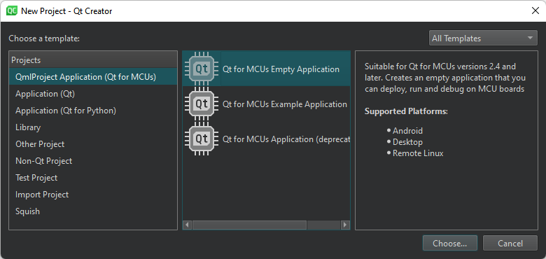

Create MCU projects
Note: Enable the McuSupport plugin to develop for MCUs.
Create a project for developing an application that you can run on MCUs. The project imports a subset of QML and Qt Quick Controls types that are supported by Qt for MCUs. For more information about developing applications for MCUs, see Qt for MCUs.
To create an application and run it on a MCU board:
- Go to File > New Project.

- Select QmlProject Application (Qt for MCUs) > Qt for MCUs Empty Application or Qt for MCUs Example Application > Choose.
- Follow the instructions of the wizard to create the project.
- Select Projects > Build & Run, and then select the kit for building the application and running it on the MCU board specified in the kit.
- Select Run to specify run settings. Usually, you can use the default settings.
See also Configure projects for running, Enable and disable plugins, How To: Develop for MCUs, Use project wizards, and Developing for MCUs.